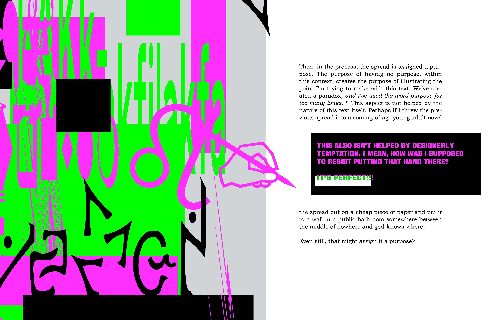

Aesthetic, the Deviant, & The proper is a digital publication
that works to investigate & summarize various typographic & design
conventions, to find the separation between colonial ideas &
“logical” ones, in addition to providing a discussion about Art vs
Design, & a short critique of the nature of “Anti-Design”. Aesthetic, the Deviant, & The proper
is an example of a visual essay, &,
as such, makes usage of visuals to support its textual arguments.
Through its visual presentation, this piece makes an effective
point about visually assisted writing, as most of the points raised
within this text could not be made without the included visuals.
Indeed, with enough writing, these points could be conveyed in
a purely textual format, though certainly not nearly as efficiently or
elegantly as in its current state.
You can view this text, in full, below:
The text itself was created in response to Craig Martin’s text Deviant
Design, highlighting the idea that there is no clear divide between
deviance & the proper, & Marshall McLuhan’s The Meaning is the
Massage, demonstrating that the presentation of a given piece can
hold as much information as the written content. This is reflected
through the pieces’ commentary on design conventions, & through
its use of dynamic & often unorthodox layouts for each given
spread. Each spread within this text was designed with a different
visual focus—one can think of each spread (or, sometimes, set of
spreads) as paragraphs within the visual essay, each with their own
separate points to address. In some regards, the visual elements of
each spread (or collection of spreads) almost act as the “thesis” for
said section. While the writing of Aesthetic, the Deviant, & The
proper is intended to lead from one page to the next, it was written in
a way where each spread/set of spreads could exist in isolation & still
properly illustrate its point—allowing a reader to skip parts they don’t
find relevant to their own thoughts about design, without necessarily
missing out on the piece as a whole.
